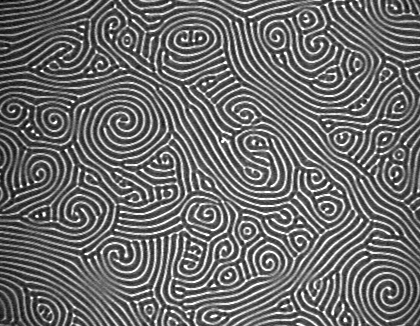
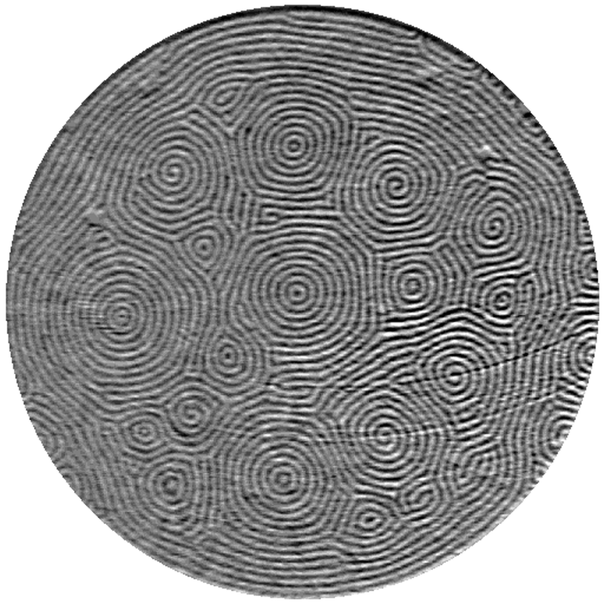

Experimental facts
What you need:
What you get:
| Morris, Bodenschatz, Cannel and Ahlers, 1993 , CO2 | Assenheimer, Steinberg, 1993, SF4 near critical point |
 |
 |
If you want to see SDC in motion, and have an MPEG player:
Here is an experimental movie of SDC from Eberhard Bodenschatz web site.
Here is our computer-generated SDC using Swift-Hohenberg equation coupled with mean flow